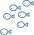

Greetings
(Os cumprimentos)
Greetings
(Os cumprimentos)
Writing
(A escrita)
The Alphabet
(O alfabeto)
Punctuation
(a pontuação)
Writing
(A escrita)
Numbers
(Os números)
Numbers
(Os números)
Continued
(Continuação)
Ordinal Numbers
(Os números ordinais)
The Body
(O corpo)
The Body
(O corpo)
Continued
(Continuação)
Body Size & Shape
(O tamanho e as formas)
The Face
(O rosto)
Skin
(A pele)
Hair
(O cabelo)
The Body II
(O corpo ii)
Organs
(Os órgãos )
Skeleton
(O esqueleto)
Continued
(Continuação)
The 5 Senses
(Os 5 sentidos)
The Digestive System
(O sistema digestivo)
Medicine
(A medicina)
Health
(A saúde)
Disease & Symptoms
(As doenças e sintomas)
Injuries
(Os ferimentos)
Doctors & Hospitals
(Médicos &hospitais)
Mental Health
(A saúde mental)
Clothing
(O vestuário)
Men's Clothing
(O vestuário masculino)
Woman's Clothing
(O vestuário feminino)
Wearing Clothes
(Vestindo as roupas)
Fashion
(Estilos e padrões)
Winter Clothing
(As roupas de inverno)
Jewelry
(As joias)
Sleepwear
(A roupa de dormir)
Sewing
(A costura)
Food
(Os alimentos)
Fruit
(As Frutas)
Continued
(Continuação)
Vegetables
(Os vegetais)
Meat
Food
(Os alimentos)
Continued
(Continuação)
Food II
(Os alimentos ii)
Breakfast
Hunger & Thirst
(A fome e a sede; comendo e bebendo)
Meals & Taste
(As refeições e o sabor)
Drinks
(As bebidas)
Sweets
(Os doces)
Animals
(Os animais)
Farm Animals
(Os animais da fazenda)
Continued
(Continuação)
Pets
(Os animais de estimação)
Continued
(Continuação)
Insects
(Os insetos)
Continued
(Continuação)
Birds
(Os pássaros)
Mammals
(Os mamíferos)
Reptiles & Amphibians
(Os répteis e os anfíbios)
African Animals
(Os animais africanos)
Sea Animals
(Os animais marinhos)

Animal Groups
(Os grupos de animais)
Nature
(A natureza)
Plants
(As plantas)
Landscapes
(As paisagens)
Continued
(Continuação)
Weather
(O clima)
Continued
(Continuação)
The Sea
(O mar)
Camping
(O acampamento)
The House
(A casa)
The House
(A casa)
The Door
(A porta)
Continued
(Continuação)
The Garden/The Yard
(O jardim, O quintal)
Indoors
(Dentro de casa)
The Den
(A sala de estar)
The Dining Room
(A sala de jantar)
Continued
(Continuação)
The Kitchen
(A cozinha)
Continued
(A cozinha i - continuação)
The Kitchen II
(A cozinha II)
The Bedroom
(O quarto)
Sleep (O sono)
The Bathroom
(O banheiro)
Continued
(Continuação)
The Bathroom 2
(O banheiro ii)
Continued
(Continuação)
The Utility Room
(A área de serviço)
Messes and Chores
(A bagunça e as tarefas)
Laundry
(A lavanderia)
Miscellaneous
(Assuntos diversos)
Colors
(As cores)
The Family
(A família)
Continued
(Continuação)
Marriage
(Casamento)
Tools
(As ferramentas)
Continued
(Continuação)
School
(A escola)
Continued
(Continuação)
Space
(O espaço)
The Farm
(A fazenda)
Continued
(Continuação)
Electronics
(Os eletrônicos)
Continued
(Continuação)
Construction
(A construção)
Money
(O dinheiro)
Continued
(Continuação)
History
(A história)
Fantasy
(A fantasia)
Continued
(Continuação)
Communication
(A comunicação)
Art
(A arte)
Instruments
(Os instrumentos)
Continued
(Continuação)
Photography
(A fotografia)
Continued
(Continuação)
The City
(A cidade)
Continued
(Continuação)
Stores
(Lojas)
Jobs
(Os trabalhos)
Law & Order
(A lei &a ordem)
The Military
(As forças armadas)
Games
(Os jogos)
Sports
Track &Field
Olympic Sports
Olympic Sports II
Computers
(Os computadores)
The Office
(O escritório)
Babies
(Os bebês)
Continued
(Continuação)
Kids
(As crianças)
The Fair
(O parque de diversões)
Science
(A ciência)
Religion
(A religião)
Shapes
(As formas)
Telling Time
(A hora)
Transportation
(Os meios de transporte)
The Car
(O automóvel)
Travel
(A viagem)
Continued
(Continuação)
Land Travel
(A viagem por terra)
Car Travel
(Viagem de carro)
Continued
(Continuação)
Sea Travel
(A viagem marítima)
Continued
(Continuação)
Geography
(Geografia)
Continents
(Os continentes)
Europe
(Europa)